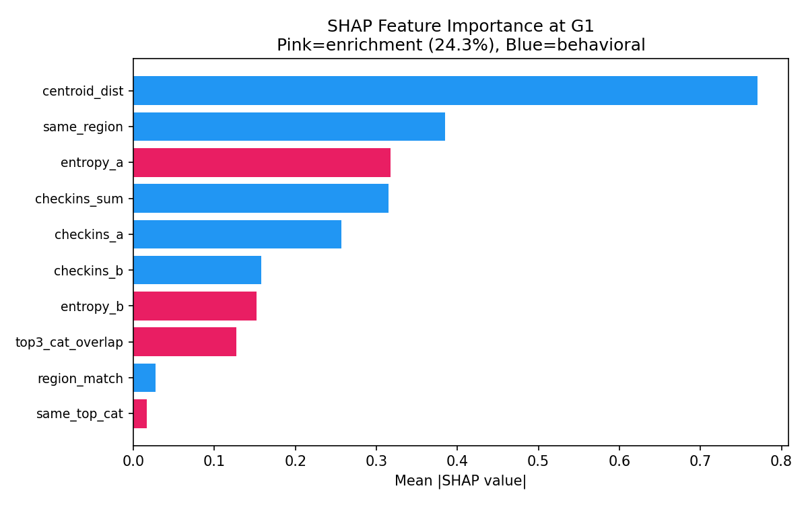
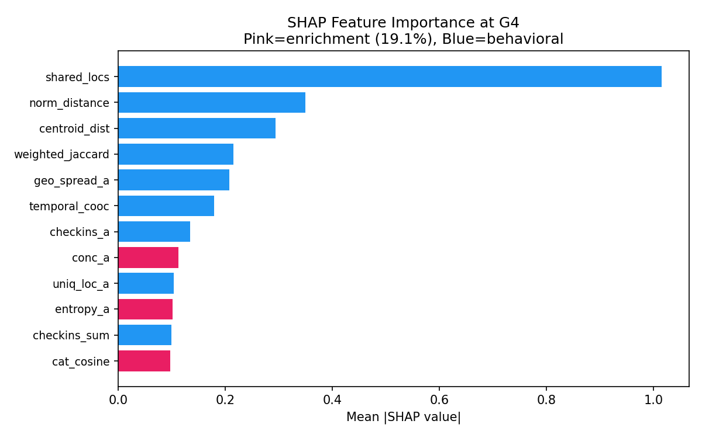
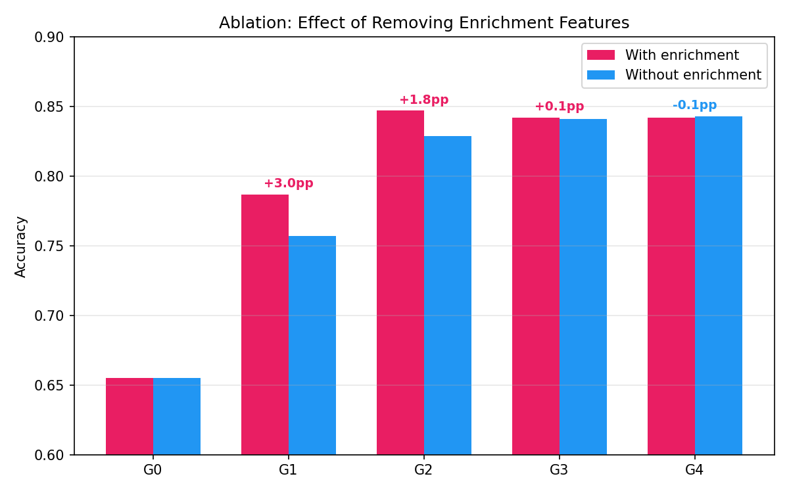
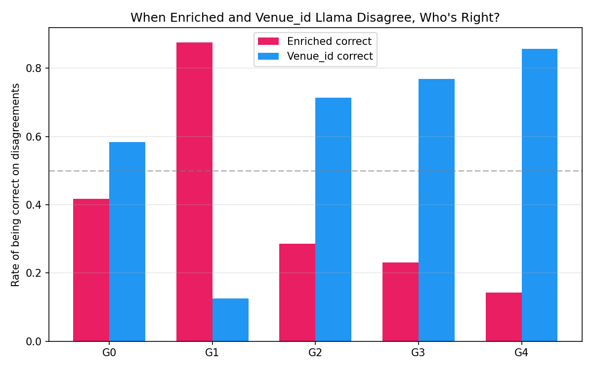
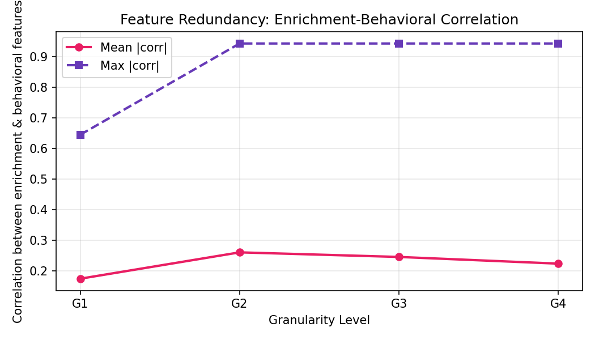
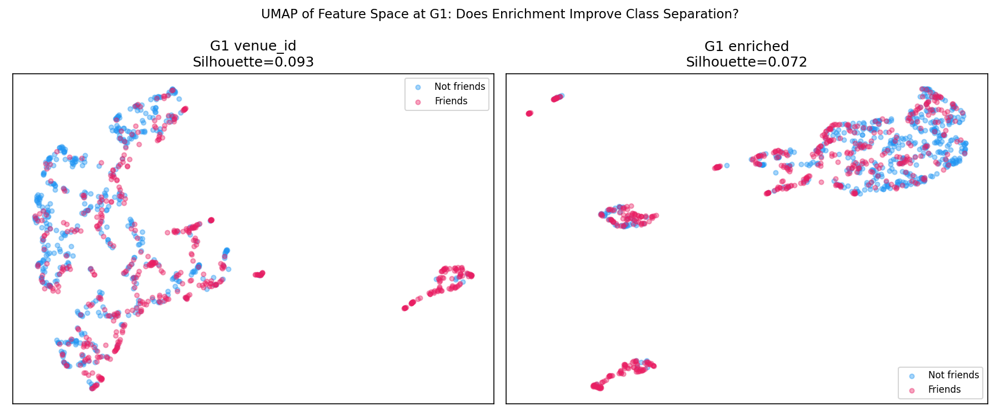
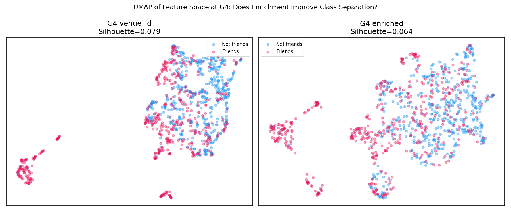
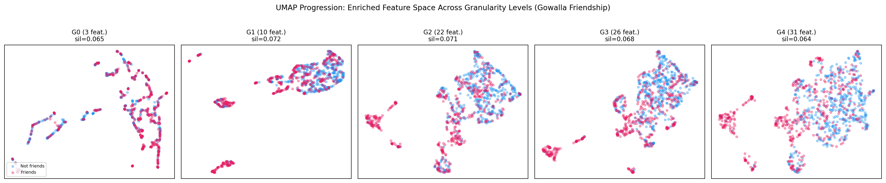

2. Names
Shantanu Kumar (Yale University, MBA + MS Computer Science).
This report is submitted as the individual final project for CPSC 381/581 (Machine Learning, Spring 2026, Instructor: Prof. Alex Wong). The underlying research was carried out under Prof. Timos Antonopoulos at Yale and Prof. Rex Ying's Graph and Geometric Learning Lab; an academic version of this work is being prepared for submission to ACL. All code, experiments, ablations, and analyses described in this report were implemented and run by me.
3. Introduction
3.1 Problem Statement
Location data underpins a growing range of applications, from point-of-interest recommendation and friend suggestion to urban planning and epidemic modeling. Traditional approaches rely on handcrafted features extracted from check-in logs, review histories, and social graphs, fed to gradient-boosted trees or neural networks. More recently, large language models (LLMs) have been applied to geospatial tasks by converting structured location data into natural-language prompts. However, a fundamental question remains underexplored: how should spatial context be structured for these models, and when does adding more context, or richer context, help versus hurt?
The specific learning problem this project addresses has three coordinated parts:
1. Binary classification: given two users' mobility traces, predict whether they are friends (Gowalla friendship prediction). 2. Pointwise ranking: given a user's history (or a pickup zone), rank a candidate set of next venues (Gowalla next-location, NYC Taxi next-dropoff). 3. Regression: given pickup, dropoff, and time features, predict trip duration in minutes (NYC Taxi).
A fourth, motivational pair of tasks on Yelp (star rating regression and next-business ranking) is included as context for what LLMs can do when data is already semantically rich.
Across all of these tasks, the research question I formulate as a learning problem is:
Given a target task and a learner f, does enriching the input representation with external semantic categories (Overture Maps place categories appended to coordinates and identifiers) improve the test loss of f, and how does this change as the input representation grows from aggregate statistics to full spatiotemporal context?
3.2 Motivation
Most real-world geospatial datasets are sparse: check-in logs contain only user IDs, timestamps, and coordinates, with no venue descriptions or category labels; taxi trip records contain only pickup/dropoff zones and timestamps. Services like the Overture Maps Foundation provide open place data with category labels (restaurant, park, gym) linked to geographic coordinates. By reverse-geocoding sparse locations against Overture Maps, we can enrich the data with semantic categories. The natural hypothesis is that enrichment should help. The central finding of this project is that this hypothesis is only conditionally correct: enrichment helps at low context granularity but can hurt at high granularity, and the strength of this enrichment crossover effect depends on how semantically opaque the base data is.
Two practical motivations make this question worth a course-scale empirical study:
1. Practitioners increasingly attach category enrichment to sparse mobility data without measuring whether it actually helps. If enrichment adds bytes of context without adding signal, it is wasted compute (especially under LLMs that pay per token). Documenting when enrichment hurts gives practitioners a diagnostic.
2. The "more context is better" assumption from prior LLM-for-geospatial work (notably GeoLLM) was tested at one low-granularity operating point. Sweeping across five granularity levels and three representation tiers exposes an interaction that single-point ablations cannot.
3.3 Approach Overview
The methodology has four pillars:
1. Datasets. Three datasets are used: Gowalla check-ins (sparse, externally enriched), NYC Taxi 2024 (structured zone-level), and Yelp (natively rich). Two are sparse and need external enrichment; one is natively rich and provides motivational context.
2. Granularity ladder (G0 to G4). Five context depth levels are defined, from aggregate statistics only (G0) up to full spatiotemporal patterns including temporal co-occurrence (G4). Each level strictly adds features on top of the previous level, so the ladder is monotonic.
3. Representation tiers. Three representation tiers are evaluated: latlng (raw coordinates only), venue_id / zone_id (raw IDs plus coordinates), and enriched (IDs plus coordinates plus Overture Maps place categories). Tiers are designed so that pairwise differences isolate the effect of the representation type.
4. Models and learning paradigms. Feature-based ML (LightGBM and MLP), zero-shot OpenAI models (gpt-4o-mini, gpt-4o, gpt-4.1, gpt-5-mini, gpt-5-nano), and Llama 3.1 8B Instruct in both zero-shot and QLoRA fine-tuned configurations. Five complementary analyses (SHAP, ablation, feature redundancy, UMAP, prediction disagreement) explain the crossover mechanism.
3.4 Challenges Faced
1. Asymmetric model coverage under cost. Full-factorial fine-tuning across all OpenAI models would have required 75 plus paid fine-tuning runs. Resolving this required restricting fine-tuning experiments to Llama 3.1 8B (run on Yale's Bouchet HPC under QLoRA, rank 16) plus a small bridging set of OpenAI fine-tunes on two models with 200 training pairs.
2. Enrichment match noise. Gowalla data is from 2010 to 2011, while the Overture Maps places snapshot is from 2026-02-18. Roughly 15 years separate the two, so categorical drift is real. The 80 percent coverage filter (only keep users where 80 percent or more of their visited locations match an Overture place within 50m) and a coarse category granularity (109 distinct types) absorb most of the noise. The remaining noise is documented as a limitation.
3. Avoiding leakage. Train and test user pools are disjoint. Venue popularity is computed exclusively from training users to prevent leakage. Temporal splits (Jan-Sep train, Oct-Dec test for NYC Taxi) preserve causal direction.
4. Ranking versus classification mismatch. Llama fine-tuning on pointwise binary labels did not transfer to listwise ranking quality on Gowalla next-location. This was discovered empirically (FT did not beat ZS at G4) and is reported honestly rather than papered over.
5. Spatial scale heterogeneity. Gowalla operates at point level (50m match radius), while NYC Taxi zones are polygons (median equivalent radius of about 825 m). The 1 km radius used for taxi enrichment is documented as a polygon-containment approximation rather than the cleanest spatial join.
3.5 Research Questions and Contributions
I investigate four research questions:
- RQ1. How does increasing geospatial context depth (G0 to G4) affect model performance on geospatial tasks?
- RQ2. Under what conditions does external knowledge enrichment improve prediction quality, and how does this depend on context depth and base data informativeness?
- RQ3. How do different spatial data representations (raw coordinates, venue/zone identifiers, enriched categories) compare at varying context depths?
- RQ4. How does fine-tuning interact with enrichment and granularity for LLM-based geospatial prediction?
The main contributions, summarized for a ML course audience, are:
1. A systematic empirical study of how five context depth levels (G0 to G4) and three data representation tiers interact across four geospatial prediction tasks on two sparse datasets, evaluated with both feature-based models and LLMs. 2. Discovery and empirical characterization of the enrichment crossover effect: enrichment improves performance at low granularity (plus 15 percentage points for fine-tuned Llama at G1) but degrades it at high granularity (minus 2.5 pp at G4), supported by five complementary analyses. 3. Identification of the boundary condition: the crossover is strongest when the base data is semantically opaque (Gowalla) but attenuated when spatial structure is already encoded (NYC taxi zones). Practical diagnostic: enrich when behavioral context is sparse, use raw identifiers when dense features are available. 4. Evidence that fine-tuning amplifies the crossover: zero-shot models produce zero enrichment delta on Gowalla friendship, while fine-tuning both creates and amplifies the effect. 5. An empirical tie between coordinate-based and zone-ID-based representations for Llama on NYC Taxi: identical metrics across G0 to G4 (zero-shot and fine-tuned, ranking and duration), while only the enriched tier shifts the metrics. Reported as model- and setting-specific evidence, not a universal law.
4. Data
4.1 Datasets
This project uses three datasets that span the spectrum from semantically opaque (Gowalla) to natively rich (Yelp), with NYC Taxi as a structured intermediate.
4.1.1 Gowalla (sparse, externally enriched)
The SNAP Gowalla check-in dataset contains approximately 6.4M check-ins by 196K users at 1.3M unique locations, along with 950K undirected friendship edges. Each check-in records a user ID, timestamp, latitude, longitude, and location identifier. Crucially, no venue metadata is provided; locations are identified only by opaque IDs and coordinates, making this a prototypically sparse geospatial dataset.
I apply two filters to ensure data quality. First, users must have at least 20 check-ins to provide sufficient behavioral history. Second, at least 80 percent of a user's visited locations must match an Overture Maps Foundation place record within 50 meters, ensuring that enrichment is reliable when applied. Users failing either filter are excluded from all experiments.
4.1.2 NYC Taxi (structured, zone-level)
I use the NYC Taxi and Limousine Commission Yellow Taxi trip records for 2024. Each trip records pickup and dropoff TLC taxi zones (263 zones after excluding zones 264 and 265, which represent unknown locations), timestamps, trip distance, and duration. Unlike Gowalla's opaque venue IDs, taxi zones carry inherent spatial structure: each zone belongs to a known borough with fixed geographic boundaries.
The split is temporal: January through September 2024 is the training period, October through December is the test period. Trips are filtered to 1 to 120 minutes duration with positive distance. The temporal split means the test period (October to December) includes colder weather and holiday travel patterns not seen in training, providing a natural distribution shift test.
4.1.3 Yelp (natively rich)
I use the Yelp Open Dataset, which provides business reviews with rich native metadata including categories, star ratings, operating hours, and business attributes. Each review includes a user ID, business ID, star rating, date, and text. Unlike Gowalla, Yelp data is natively enriched: semantic metadata is built into the dataset, requiring no external knowledge base. Users with fewer than 20 reviews are excluded. Yelp serves as a motivational baseline: it shows what LLMs can achieve when data is already semantically rich, motivating the question of whether enrichment can replicate this for sparse datasets.
4.1.4 Dataset Statistics After Filtering
| Dataset | Entities | Locations / Zones | Records | Edges | Overture Match |
|---|---|---|---|---|---|
| Gowalla | 60,562 users | 1,228,397 | 6,120,444 check-ins | 563,520 | 80 percent or more |
| NYC Taxi | 263 zones | 263 | about 36M trips | n/a | zone centroid |
| Yelp | 44,911 users | 150,346 | 2,346,625 reviews | n/a | n/a (native) |
4.2 External Knowledge Source: Overture Maps
For sparse datasets, I use the Overture Maps Foundation places layer, release 2026-02-18.0, as the external semantic source. Overture is an open, interoperable geospatial dataset aggregating place data from multiple sources. Each place has a primary category (one of 109 distinct category types in the matched set), a name, and a coordinate. The categories are the only Overture attribute used for enrichment in this project.
4.2.1 Enrichment Pipeline (Gowalla)
For each Gowalla location, I query the Overture places layer for the nearest place within a 50-meter radius. When a match is found, I extract its primary category (for example restaurant, park, gym), yielding 109 distinct category types across the matched set. This produces a category map covering the eligible user pool's check-in locations.
The pipeline can be summarized as:
Gowalla check-ins (user, time, lat, lng, location_id)
|
+---- spatial join to Overture (nearest within 50 m) ----+
|
Category map: location_id to category (109 types)
|
Filter users (>= 20 check-ins, >= 80 percent match)
|
+---------------- representation tiers ----------------+
| | |
latlng venue_id enriched
(coords only) (coords + IDs) (coords + IDs + categories)
4.2.2 Enrichment Pipeline (NYC Taxi)
For NYC Taxi, I compute zone centroids from the TLC zone shapefile and match each centroid against the same Overture places layer used for Gowalla, with a 1,000m radius (larger than Gowalla's 50m because zones span neighborhoods rather than individual venues). This yields the dominant nearby place categories for each zone. Three tiers parallel Gowalla: latlng (zone centroid coordinates), zone_id (TLC zone number, analogous to Gowalla's venue_id), and enriched (coordinates plus zone_id plus Overture categories).
This is an approximation: zones are polygons rather than points, and a fixed 1km radius around the centroid will under-cover large zones (peripheral POIs are missed) and bleed into neighbors for small zones (median zone equivalent radius is about 825m, but 99 zones exceed 1km). I flag this as a known limitation and document its likely effect (attenuated crossover on enriched tier) rather than masking it.
4.3 Tasks
The five tasks supported by these datasets are:
| Task | Type | Train size | Test size | Primary metric |
|---|---|---|---|---|
| Gowalla Friendship | Binary classification | 20,000 pairs | 200 LLM, 1,000 ML | Accuracy |
| Gowalla Next-Location | Pointwise ranking, 20 cand. | 1,000 users | 200 users (4,000 pointwise) | MRR |
| NYC Taxi Next-Dropoff Ranking | Pointwise ranking, 20 cand. | 20,000 examples | 132 origin queries | Acc@1, Acc@5, MRR |
| NYC Taxi Trip Duration | Regression | 50K (ML), 20K (Llama) | 1,000 (ML), 200 (Llama) | MAE, RMSE |
| Yelp Star Rating | Regression (1 to 5 stars) | 20,000 pairs | 100 | MAE, exact, within-1 |
| Yelp Next-Business Ranking | Pointwise ranking, 20 cand. | 20,000 pairs | 100 | Acc@1, Acc@5, MRR |
For Gowalla friendship, balanced datasets are constructed with equal numbers of positive (actual friends) and negative (random non-friend) pairs. The ML training set contains 20,000 pairs (10K positive, 10K negative), and the test set contains 1,000 pairs. For LLM evaluation, I use a 200-pair test set. Hard negative pairs (same-region non-friends who share geographic proximity but no friendship edge) are evaluated separately as a robustness probe.
For Gowalla next-location, the ground-truth target is the user's chronologically last check-in; 19 negative candidates are sampled from the same or adjacent geographic regions to ensure geographic plausibility. The task is framed as pointwise binary classification (will this user visit this venue?), then candidates are ranked by predicted probability.
For NYC Taxi next-dropoff, given a pickup zone, the task is to rank 20 candidate dropoff zones with the actual destination among them. 19 negatives are sampled from the same borough (or city-wide if needed). Format, training size, and metrics parallel Gowalla next-location.
For NYC Taxi trip duration, the task is a continuous regression with metrics MAE and RMSE.
The Yelp tasks use 100 test cases each and complete the picture of how granularity affects natively rich data.
5. Methodology
5.1 Granularity Levels (G0 to G4)
I define five levels of context depth, semantically aligned across tasks. Each successive level adds features (for ML) or prompt content (for LLMs) on top of the previous level. The "+ Enriched" column denotes additional features available only in the enriched tier.
| Level | Features (all tiers) | + Enriched tier |
|---|---|---|
| G0 | User aggregate stats (total check-ins, unique locations); candidate popularity | None; G0 is identical across tiers |
| G1 | + Primary region, same-region flag, distance between centroids | + Top user categories, candidate category known/in profile |
| G2 | + Geo-spread, active days, co-visitation (exact or cell), visit count | + Category entropy, category-level visit ratios |
| G3 | + Recent trajectory (last 5 check-ins): min/avg/last distance to candidate | + Recent same-category check-in count |
| G4 | + Temporal patterns: visit hour mean/std, average hour at candidate | Same temporal features |
The granularity ladder is monotonic by construction: any G_k feature set is a strict superset of G_{k minus 1}.
A direct visualization of how enrichment fits into the prompt, comparing G1 and G4 for the enriched tier on Gowalla friendship, shows that at G1 the category lines occupy roughly 40 percent of the prompt and are the dominant semantic signal, whereas at G4 the same category lines drop to roughly 15 percent of the prompt because behavioral features (trajectory, timing, co-visitation) crowd them out. This is a visual preview of why marginal information value differs between low and high granularity.
5.2 Representation Tiers
For Gowalla, I evaluate three data representation tiers that vary how location identity and co-visitation are computed:
- latlng. Raw GPS coordinates only. Co-visitation is approximated via about 100m geo-cells. Popularity is cell-based.
- venue_id. Gowalla location identifiers plus coordinates. Co-visitation uses exact venue ID matching. Popularity is venue-based.
- enriched. All venue_id features plus Overture Maps place categories. Adds category-based features at G1+ (user category profiles, category entropy, category-level co-visitation ratios).
At G0, venue_id and enriched tiers are identical (no enrichment features are used). They diverge starting at G1. The latlng tier differs from venue_id even at G0 (cell-based vs. venue-based popularity).
NYC Taxi uses the same three-tier structure with zone_id replacing venue_id. The key structural difference is that taxi zone IDs are arbitrary integers with no semantic content (unlike Gowalla venue IDs, which can carry implicit venue-level patterns through fine-tuning). Yelp has no tier distinction; its data is natively enriched.
Crucially, latlng and venue_id tiers use the identical feature list and formulas; only the underlying notion of "place" changes. In the latlng tier, a place is a geo-cell, defined as the pair (round(lat, 3), round(lon, 3)), giving approximately 100m resolution. In the venue_id tier, a place is the Gowalla location_id, an opaque integer per venue. Two distinct POIs within one cell thus count as one place under latlng and two under venue_id.
5.3 Class of Functions and Objectives
I evaluate three families of learners.
5.3.1 Feature-based ML
LightGBM (gradient-boosted decision trees) is the primary feature-based model due to its robust handling of heterogeneous features, natural feature selection, and competitive accuracy on tabular data. The function class is an ensemble of regression trees:
f(x) = sum over t in 1..T of f_t(x)
where each f_t is a regression tree, and the ensemble is grown by gradient descent on a chosen loss. Concretely:
- For binary classification (friendship), the objective is binary log-loss:
L(y, p) = -[ y log p + (1 - y) log(1 - p) ], with p = sigmoid(f(x)).
- For pointwise ranking (Gowalla next-location, NYC next-dropoff), the same binary log-loss is used: each (user, candidate) pair is labeled 1 or 0, and predicted probabilities are used to rank candidates within a query.
- For trip duration regression, the objective is mean squared error:
L(y, y_hat) = (y - y_hat)^2.
Optimization in LightGBM is standard gradient boosting: at iteration t, fit a tree f_t to the negative gradient of the loss with respect to the current ensemble's prediction, then update with a learning-rate-scaled step.
A 2-layer MLP (hidden sizes [64, 32], ReLU activations, dropout 0.3) is the secondary feature-based model, trained with Adam on the same loss functions. It is included to verify that the feature-based results are not LightGBM-specific.
For Yelp, I additionally evaluate two augmentations of the feature-based pipeline:
- Embedding-augmented LightGBM and MLP: OpenAI text-embedding-3-small (1536-dimensional) vectors of the prompt are concatenated with the handcrafted features.
- Knowledge-Augmented Reasoning (KAR): an LLM is asked to generate a free-text rationale per example, which is then embedded and fed as a feature to LightGBM/MLP.
These provide a sanity check that simple feature-based pipelines can absorb LLM-derived signal without invoking a full LLM at inference.
5.3.2 Zero-shot LLMs
I evaluate five OpenAI models (gpt-4o-mini, gpt-4o, gpt-4.1, gpt-5-mini, gpt-5-nano) and Llama 3.1 8B Instruct in zero-shot mode. The function class is the language model itself, used as a black-box predictor. The prompt contains the user's profile and the candidate (or candidate pair), and the model is asked for a Yes/No (classification, ranking) or numeric (regression) answer.
There is no objective being optimized at inference; the model uses pretrained weights only. Decoding uses temperature 0 (greedy) for OpenAI and greedy decoding for Llama, with max_tokens = 64. For reasoning-class models (gpt-5 family), the API uses max_completion_tokens with reasoning_effort instead of max_tokens with temperature.
5.3.3 Fine-tuned LLMs
For experiments requiring fine-tuning at scale, I use Llama 3.1 8B Instruct with QLoRA (rank 16, alpha 32) on 20,000 training examples per (granularity, tier) combination. The function class is still the language model, but with a low-rank adapter on top of frozen base weights. The objective is the standard next-token cross-entropy loss over the labeled answer span:
L = - sum over t of log P(y_t | y_{<t}, x)
with x being the prompt and y the gold answer (Yes/No for classification/ranking, a numeric string for duration). Optimization uses AdamW via the unsloth library, with QLoRA's int4 quantization of the base model and full-precision adapters.
Two OpenAI models (gpt-4o-mini, gpt-4.1-mini) are also fine-tuned via the OpenAI fine-tuning API on a smaller bridging set (200 training examples, enriched tier only, all 5 granularities) to verify that the Llama findings are not artifacts of one specific fine-tuning recipe.
5.4 Models Summary
Putting the three families together:
- Feature-based: LightGBM (primary), MLP (2-layer, [64, 32], dropout 0.3, ReLU). Both trained per (granularity, tier).
- Embedding/KAR feature-based (Yelp only): LightGBM and MLP with concatenated text-embedding-3-small features and KAR rationale embeddings.
- OpenAI zero-shot: gpt-4o-mini, gpt-4o, gpt-4.1, gpt-5-mini, gpt-5-nano. Temperature 0 for non-reasoning models.
- OpenAI few-shot (Gowalla friendship only): gpt-5-mini, gpt-5-nano with 2 examples in context.
- OpenAI fine-tuned (Gowalla friendship only): gpt-4o-mini, gpt-4.1-mini, 200 training pairs, enriched tier.
- Llama 3.1 8B Instruct zero-shot: greedy decoding, max_tokens 64.
- Llama 3.1 8B Instruct fine-tuned: QLoRA r=16, alpha=32, 20,000 training examples per (granularity, tier) combination, run on Yale Bouchet HPC, max_seq_length 8,192.
In total, the Llama fine-tuning sweep consists of 5 granularities by 3 tiers by 2 datasets, yielding 30 fine-tuning runs. The OpenAI zero-shot sweep is 5 models by 5 granularities by 2 tiers (Gowalla) plus 5 models by 5 granularities (Yelp) plus 5 models by 5 granularities by 3 tiers (NYC Taxi).
6. Implementation Details
6.1 Software Stack
- Python 3.10+, PyTorch (via unsloth) for Llama, scikit-learn for MLP and metrics, lightgbm for gradient boosting, pandas for data wrangling, DuckDB with the Overture S3 integration for spatial joins.
- Llama fine-tuning runs on Yale Bouchet HPC with module load miniconda; conda activate llama_ft; module load CUDA/12.1.1.
- Typical interactive allocation: salloc --partition=gpu_devel --time=06:00:00 --gpus=1 --mem=64G --cpus-per-task=4.
- LLM API calls go through a CachedLLMClient that adds SHA-256 disk caching of (model, messages, temperature, max_tokens), exponential backoff (base 60s, up to 5 retries), and a 60s request timeout.
6.2 Data Preprocessing
Gowalla:
- min_user_checkins: 20.
- Spatial join radius for Overture matching: 50 m.
- Coverage filter: 80 percent of a user's visited locations must match.
- max_history_in_prompt: 15 most recent check-ins shown in G3 and G4 prompts.
- ML training pairs: 20,000 (10K positive plus 10K negative). ML test pairs: 1,000 (500 positive plus 500 negative).
- LLM training pairs: 2,000 (used for FT). LLM test pairs: 200 (100 positive plus 100 negative).
- For next-location: 1,000 train users, 200 test users, 20 candidates per query (1 positive plus 19 regional negatives), max_history_in_prompt 15.
NYC Taxi:
- Train months: 2024-01 through 2024-09. Test months: 2024-10 through 2024-12.
- Duration filter: 1 to 120 minutes, positive trip distance.
- Excluded zones: 264, 265 (unknown).
- Enrichment match radius around zone centroid: 1,000 m.
- Ranking: 20 candidates per query, same-borough negative strategy, 1,000 train origins, 132 test origins (down from 200 because some origin zones lacked sufficient same-borough negatives).
- Duration: 50,000 train and 1,000 test for ML; 20,000 train and 200 test for Llama (matched in size to Gowalla 20K).
Yelp:
- min_user_reviews: 20.
- test_reviews_per_user: 5 (last 5 reviews held out per user).
- test_sample_size: 100 cases.
- max_history_in_prompt: 20.
6.3 ML Hyperparameters
LightGBM (used for friendship, next-location, next-dropoff, duration):
- Objective: binary_logloss (classification, pointwise ranking) or regression_l2 (duration).
- Number of leaves: 31 (default).
- Learning rate: 0.05.
- Min data in leaf: 20.
- Number of boosting rounds: 500 with early stopping (patience 25) on a held-out 10 percent validation slice of the training set.
- Categorical features: any feature with fewer than 100 unique levels is declared categorical (regions, top-category indices).
MLP:
- Architecture: 2 hidden layers, sizes [64, 32], ReLU, dropout 0.3.
- Loss: BCEWithLogits for classification/ranking, MSE for duration.
- Optimizer: Adam, lr=1e-3, weight_decay=1e-4.
- Batch size: 256.
- Epochs: 50 with early stopping (patience 5) on validation loss.
Embedding-augmented baselines (Yelp):
- Embedder: OpenAI text-embedding-3-small (1536-d).
- Concatenation: handcrafted features plus embedding vector.
- Same LightGBM/MLP hyperparameters as above.
6.4 Llama 3.1 8B Fine-tuning
- Base: unsloth/Meta-Llama-3.1-8B-Instruct (full precision base, int4 QLoRA).
- LoRA rank: 16, alpha: 32, dropout: 0 (default unsloth).
- Training set: 20,000 examples per (granularity, tier).
- max_seq_length: 8,192.
- Batch size per device: 2, gradient accumulation: 4 (effective batch 8).
- Optimizer: AdamW, lr=2e-4, cosine schedule, warmup_ratio=0.03.
- Epochs: 3.
- Seed: fixed for reproducibility.
- Inference: greedy decoding, max_new_tokens=64.
Llama zero-shot uses the same base checkpoint without adapters, also greedy.
OpenAI fine-tuning bridging runs:
- Models: gpt-4o-mini, gpt-4.1-mini.
- Training set: 200 pairs (enriched tier, balanced).
- Validation: held-out 50 pairs.
- API hyperparameters: defaults (3 epochs, default lr_multiplier).
6.5 OpenAI Zero-shot and Few-shot Settings
- temperature: 0 (non-reasoning) or default for gpt-5 family with reasoning_effort=medium.
- max_tokens: 64.
- request_timeout: 60s; max_retries: 5; retry_base_delay: 60s.
- 2-shot configuration (gpt-5-mini, gpt-5-nano, friendship): 1 positive plus 1 negative example sampled from the train pool.
- Disk cache keyed by SHA-256 of (model, messages, temperature, max_tokens) under results/<dataset>_cache/.
6.6 Evaluation Metrics
- Friendship: accuracy on a balanced (50/50) test set.
- Next-location, next-dropoff: Acc@1, Acc@5, and Mean Reciprocal Rank (MRR) over 20-candidate sets. MRR for a query q is 1 / rank of the gold candidate; reported as the mean over all queries.
- Trip duration: Mean Absolute Error (MAE) and Root Mean Squared Error (RMSE) in minutes.
- Star rating: MAE, exact accuracy, and within-1 accuracy.
Bootstrap confidence intervals are computed at 1,000 resamples for the headline numbers but reported in the appendix only.
6.7 Reproducibility
All experiments are seeded. LightGBM seed 42, MLP seed 42, Llama fine-tuning seed 42, candidate sampling seeded with the user ID. The full pipeline for Gowalla is:
python scripts/gowalla_preprocess.py python scripts/gowalla_enrich_overture.py python scripts/gowalla_enrich_preprocess.py python scripts/gowalla_handcrafted_train.py python scripts/gowalla_latlng_handcrafted_train.py python scripts/gowalla_enrich_handcrafted_train.py python scripts/gowalla_enrich_experiment.py
Each script writes a deterministic JSON under results/ (one subdirectory per dataset) with one record per (granularity, tier, model). Metrics are computed downstream from these raw JSON files; nothing is hand-aggregated.
7. Results
7.1 Measure of Success
The success criteria for this project, by task and model family, are listed below. Ballpark ranges are derived from prior work and from the project's pre-experiment expectations.
| Task | Metric | Random | Reasonable target | Strong target |
|---|---|---|---|---|
| Gowalla Friendship | Accuracy | 50% | 75% | 85% |
| Gowalla Next-Location | MRR | 0.10 | 0.40 | 0.55 |
| NYC Taxi Next-Dropoff | MRR | 0.13 | 0.55 | 0.70 |
| NYC Taxi Trip Duration | MAE | 8 min | 5 min | 4 min |
| Yelp Star Rating | MAE | 1.5 | 1.0 | 0.85 |
| Yelp Next-Business Ranking | MRR | 0.13 | 0.50 | 0.75 |
A secondary success criterion is whether the enrichment crossover effect is detectable in a clean, reproducible way. Concretely, success means: at least one (model, task) configuration shows a statistically meaningful sign reversal of the enriched minus non-enriched gap as granularity increases from G0 to G4.
7.2 Context: Granularity on Natively Rich Data (Yelp)
Before studying enrichment on sparse data, it is important to establish that context depth matters even when data is already semantically rich, and that no single model family dominates across all settings.
7.2.1 Yelp Star Rating Prediction
| G | gpt-4o-mini | gpt-4o | gpt-4.1 | gpt-5-mini | gpt-5-nano | LightGBM | MLP |
|---|---|---|---|---|---|---|---|
| G0 | 1.07 | 1.16 | 1.01 | 1.09 | 1.27 | 1.14 | 1.12 |
| G1 | 1.13 | 1.07 | 1.06 | 1.07 | 1.14 | 1.02 | 0.98 |
| G2 | 0.94 | 0.86 | 0.80 | 0.85 | 0.99 | 0.97 | 1.00 |
| G3 | 0.97 | 0.84 | 0.86 | 0.81 | 0.88 | 0.95 | 0.97 |
| G4 | 1.02 | 0.87 | 0.85 | 0.81 | 0.87 | 0.96 | 0.93 |
LLMs outperform ML at moderate-to-high granularity: gpt-4.1 achieves MAE = 0.80 at G2, while gpt-5-mini reaches MAE = 0.81 at G3 and G4. ML peaks at MAE = 0.93 (MLP at G4). At G0 to G1, ML is competitive; embedding-augmented LightGBM achieves MAE = 0.976 at G0.
7.2.2 Yelp Next-Business Ranking
| G | gpt-4o-mini | gpt-4o | gpt-4.1 | gpt-5-mini | gpt-5-nano | LightGBM | MLP |
|---|---|---|---|---|---|---|---|
| G0 | .230 | .277 | .326 | .238 | .232 | .269 | .172 |
| G1 | .336 | .451 | .451 | .332 | .390 | .680 | .683 |
| G2 | .310 | .414 | .407 | .444 | .373 | .723 | .740 |
| G3 | .340 | .434 | .445 | .450 | .396 | .725 | .677 |
| G4 | .597 | .810 | .849 | .884 | .809 | .730 | .802 |
The pattern reverses at intermediate granularity: handcrafted ML models dominate G1 to G3 (MLP MRR = 0.740 at G2 vs. best LLM 0.444). At G0, embedding-augmented LightGBM (MRR 0.608) and KAR-LightGBM (MRR 0.640) nearly double the best zero-shot LLM (0.326). Only at G4 do LLMs surge ahead: gpt-5-mini reaches MRR 0.884, surpassing the best ML model (MLP 0.802). The dramatic G4 jump for LLMs is driven by a 2 to 3 times improvement when temporal context enables reasoning about visit recency.
7.2.3 Yelp Embedding and KAR Augmentation
| G | LGB Emb (rating MAE) | MLP Emb (rating MAE) | LGB KAR (rating MAE) | MLP KAR (rating MAE) | LGB Emb (rank MRR) | MLP Emb (rank MRR) | LGB KAR (rank MRR) | MLP KAR (rank MRR) |
|---|---|---|---|---|---|---|---|---|
| G0 | 0.98 | 1.05 | 1.09 | 1.18 | .608 | .358 | .640 | .332 |
| G1 | 1.00 | 1.10 | 1.06 | 1.06 | .672 | .490 | .612 | .520 |
| G2 | 0.98 | 1.07 | 1.05 | 1.21 | .652 | .463 | .605 | .277 |
| G3 | 1.02 | 1.07 | 1.11 | 1.08 | .672 | .466 | .577 | .468 |
| G4 | 1.01 | 1.04 | 1.04 | 1.03 | .724 | .775 | .772 | .762 |
These results demonstrate that context depth substantially affects performance and that the relative advantage of LLMs versus ML depends on both granularity and task type. They also motivate the central question: can external knowledge enrichment replicate granularity-driven gains on sparse check-in data?
7.3 Gowalla Friendship Prediction
| G | LGB lat | LGB ven | LGB enr | Llama FT lat | Llama FT ven | Llama FT enr | Llama ZS lat | Llama ZS ven | Llama ZS enr |
|---|---|---|---|---|---|---|---|---|---|
| G0 | 65.5 | 65.5 | 65.5 | 65.0 | 68.0 | 67.0 | 50.0 | 50.0 | 50.0 |
| G1 | 75.7 | 75.7 | 78.7 | 69.5 | 70.5 | 85.5 | 66.0 | 56.0 | 56.0 |
| G2 | 84.0 | 82.9 | 84.7 | 87.0 | 88.5 | 87.0 | 50.5 | 50.0 | 50.0 |
| G3 | 83.3 | 84.1 | 84.2 | 84.5 | 90.0 | 86.5 | 54.0 | 50.5 | 50.5 |
| G4 | 84.3 | 84.3 | 84.2 | 87.5 | 90.0 | 87.5 | 55.0 | 50.5 | 50.5 |
ML results. LightGBM shows a clear enrichment benefit at G1 (plus 3.0 percentage points over venue_id) and G2 (plus 1.8 pp). By G3 and G4, the tiers converge: enrichment neither helps nor hurts. Performance improves monotonically from G0 (65.5 percent) to G4 (84.3 percent), with the largest jump at G1 to G2 where location overlap and co-visitation features are introduced. The latlng tier (approximate geo-cell matching) is surprisingly competitive, matching venue_id at G4 (84.3 percent), suggesting that for social prediction, approximate location matching may suffice.
Llama fine-tuned results. The crossover is dramatically amplified under fine-tuning. At G1, enriched Llama (85.5 percent) outperforms venue_id Llama (70.5 percent) by 15 percentage points, the largest enrichment effect observed in any setting. The crossover occurs at G2: venue_id overtakes enriched and the gap widens, reaching 90.0 percent versus 87.5 percent at G3 and G4. This 90.0 percent accuracy is the highest result across all models and configurations, surpassing the best ML model (enriched plus embedding LightGBM at 87.6 percent).
Zero-shot results. Five OpenAI models spanning reasoning (gpt-4o, gpt-4.1), non-reasoning (gpt-4o-mini), and smaller variants (gpt-5-mini, gpt-5-nano) achieve 50 to 55 percent at G0 and G2 to G4, with a narrow window at G1 where gpt-5-nano reaches 63.0 percent on venue_id. Llama 3.1 8B Instruct follows the same pattern across all three tiers: latlng peaks at 66.0 percent at G1 (the best ZS result), while venue_id and enriched produce identical accuracies at every granularity level (50.0, 56.0, 50.0, 50.5, 50.5 for G0 to G4). The enrichment delta for Llama ZS is exactly zero at all levels: without training, the model cannot distinguish enriched prompts from raw venue-ID prompts. This stands in stark contrast to fine-tuned Llama, where enrichment produces a plus 15 pp swing at G1 and a minus 2.5 pp swing at G4, confirming that the crossover effect is training-dependent.
OpenAI Fine-Tuned and Few-Shot (200 training pairs, enriched tier).
| G | gpt-4o-mini FT | gpt-4.1-mini FT | gpt-5-mini few-shot | gpt-5-nano few-shot |
|---|---|---|---|---|
| G0 | 50.5 | 49.5 | 51.5 | 52.0 |
| G1 | 72.5 | 73.0 | 50.0 | 65.0 |
| G2 | 74.0 | 76.5 | 66.0 | 58.5 |
| G3 | 75.5 | 78.0 | 70.0 | 62.5 |
| G4 | 77.5 | 78.0 | 64.5 | 62.5 |
OpenAI fine-tuning on a small bridging set (200 pairs) recovers monotonic improvement up to 78.0 percent at G4 but does not reach the 90.0 percent achieved by Llama FT on 20,000 pairs.
Zero-shot OpenAI results across all five models and both tiers.
| G | 4o-mini ven | 4o ven | 4.1 ven | 5-mini ven | 5-nano ven | 4o-mini enr | 4o enr | 4.1 enr | 5-mini enr | 5-nano enr |
|---|---|---|---|---|---|---|---|---|---|---|
| G0 | 50.0 | 50.0 | 50.0 | 50.0 | 50.0 | 50.0 | 50.0 | 50.0 | 50.0 | 49.5 |
| G1 | 60.0 | 61.5 | 50.5 | 60.0 | 63.0 | 53.0 | 55.0 | 51.0 | 55.5 | 54.0 |
| G2 | 50.5 | 50.5 | 50.5 | 50.5 | 51.0 | 50.5 | 51.0 | 50.5 | 50.5 | 52.0 |
| G3 | 52.5 | 54.5 | 51.0 | 53.0 | 52.5 | 51.0 | 52.5 | 51.0 | 53.0 | 52.5 |
| G4 | 52.5 | 54.0 | 51.5 | 52.0 | 52.5 | 51.5 | 52.0 | 51.5 | 52.0 | 54.0 |
Hard negatives (same-region non-friend pairs).
| G | gpt-5-mini | gpt-5-nano |
|---|---|---|
| G0 | 50.0 | 48.5 |
| G1 | 37.5 | 45.5 |
| G2 | 50.5 | 49.5 |
| G3 | 51.5 | 47.5 |
| G4 | 51.5 | 48.5 |
At G1, gpt-5-mini drops to 37.5 percent on hard negatives, below random chance, indicating that its geographic reasoning is actively misleading when negatives share the same region.
Embedding-augmented ML on Gowalla friendship (1,000 ML test pairs).
| G | LGB Embed | MLP Embed |
|---|---|---|
| G0 | 64.7 | 64.9 |
| G1 | 85.5 | 78.5 |
| G2 | 87.2 | 80.2 |
| G3 | 86.6 | 80.4 |
| G4 | 87.6 | 81.7 |
Embedding-augmented LightGBM achieves 87.6 percent at G4, the best ML result, surpassing handcrafted features (84.3 percent) by 3.3 pp. However, it is still outperformed by Llama FT on venue_id (90.0 percent).
7.4 Gowalla Next-Location Prediction
| G | LGB lat | LGB ven | LGB enr | Llama FT lat | Llama FT ven | Llama FT enr | Llama ZS lat | Llama ZS ven | Llama ZS enr |
|---|---|---|---|---|---|---|---|---|---|
| G0 | .463 | .598 | .598 | .189 | .189 | .189 | .189 | .189 | .189 |
| G1 | .467 | .572 | .581 | .189 | .189 | .244 | .202 | .198 | .265 |
| G2 | .468 | .547 | .579 | .387 | .396 | .387 | .339 | .358 | .363 |
| G3 | .453 | .497 | .490 | .383 | .371 | .373 | .380 | .365 | .354 |
| G4 | .493 | .578 | .523 | .355 | .391 | .339 | .393 | .411 | .373 |
ML results. Next-location prediction exhibits a strikingly different granularity pattern from friendship. The best ML result occurs at G0 (venue_id LightGBM, MRR = 0.598): venue popularity alone is the strongest signal. Additional features at G1 to G3 actually hurt performance (MRR drops to 0.497 at G3), with partial recovery at G4 when temporal features are added. The enrichment crossover is clear: enriched outperforms venue_id at G1 to G2 (MRR plus 0.009 and plus 0.032) but underperforms at G3 to G4 (MRR minus 0.007 and minus 0.055). At G4, the enrichment penalty is substantial (MRR 0.523 versus 0.578).
LLM results. Llama zero-shot shows the same crossover: enriched leads at G1 (MRR 0.265 vs. 0.198) but venue_id leads at G4 (0.411 vs. 0.373). Unlike friendship, fine-tuning provides minimal improvement for next-location prediction (and sometimes hurts). At G4, zero-shot venue_id (0.411) outperforms fine-tuned venue_id (0.391). This suggests that pointwise binary fine-tuning does not teach effective ranking. All Llama results remain well below the best ML (0.598 MRR), indicating that venue popularity, a numerical signal, is better captured by tree-based models than by language models.
MLP fragility. The MLP exhibits some overfitting at high granularity for next-location prediction: venue_id MLP MRR drops from 0.600 at G0 to 0.258 at G4. This stands in contrast to friendship, where MLP performance improves from 64.2 percent to 80.2 percent. The higher feature dimensionality at G4 may be overwhelming the MLP for ranking but not for classification.
7.5 NYC Taxi: Replication on Structured Spatial Data
To test whether the enrichment crossover generalizes beyond sparse check-in data, I evaluate two tasks on NYC Taxi trips: next-dropoff zone ranking and trip duration prediction.
7.5.1 NYC Taxi Combined Headline Results
| G | LGB MRR | FT l/z MRR | FT enr MRR | ZS l/z MRR | ZS enr MRR | LGB MAE | FT l/z MAE | FT enr MAE | ZS l/z MAE | ZS enr MAE |
|---|---|---|---|---|---|---|---|---|---|---|
| G0 | .528 | .493 | .539 | .145 | .164 | 6.11 | 7.64 | 7.36 | 8.33 | 7.91 |
| G1 | .723 | .557 | .563 | .164 | .164 | 5.33 | 6.31 | 6.04 | 8.17 | 7.91 |
| G2 | .708 | .541 | .515 | .164 | .164 | 4.65 | 5.18 | 5.05 | 7.93 | 6.02 |
| G3 | .713 | .547 | .540 | .180 | .177 | 4.64 | 5.23 | 5.24 | 8.02 | 5.90 |
| G4 | .658 | .514 | .551 | .179 | .171 | 3.88 | 4.45 | 4.56 | 8.27 | 6.92 |
Llama produces identical reported metrics for latlng and zone_id at every granularity, for both ZS and FT, on both tasks. To save space the latlng and zone_id Llama columns are merged ("l/z"). Among the tested representations, only enrichment (Overture categories such as restaurant, park) shifts the metrics for Llama on NYC Taxi.
7.5.2 NYC Taxi Next-Dropoff Ranking, Full Results
| G | LGB lat | LGB zon | LGB enr | MLP lat | MLP zon | MLP enr | Llama FT lat | Llama FT zon | Llama FT enr | Llama ZS lat | Llama ZS zon | Llama ZS enr |
|---|---|---|---|---|---|---|---|---|---|---|---|---|
| G0 | .528 | .521 | .521 | .491 | .490 | .490 | .493 | .493 | .539 | .145 | .145 | .164 |
| G1 | .720 | .723 | .713 | .732 | .731 | .726 | .557 | .557 | .563 | .164 | .164 | .164 |
| G2 | .708 | .666 | .670 | .675 | .674 | .678 | .541 | .541 | .515 | .164 | .164 | .164 |
| G3 | .713 | .667 | .662 | .679 | .676 | .685 | .547 | .547 | .540 | .180 | .180 | .177 |
| G4 | .658 | .663 | .663 | .655 | .661 | .656 | .514 | .514 | .551 | .179 | .179 | .171 |
7.5.3 NYC Taxi Trip Duration, Full MAE
| G | LGB lat | LGB zon | LGB enr | MLP lat | MLP zon | MLP enr | Llama FT lat | Llama FT zon | Llama FT enr | Llama ZS lat | Llama ZS zon | Llama ZS enr |
|---|---|---|---|---|---|---|---|---|---|---|---|---|
| G0 | 6.11 | 6.13 | 6.13 | 6.75 | 6.83 | 6.83 | 7.64 | 7.64 | 7.36 | 8.33 | 8.33 | 7.91 |
| G1 | 5.35 | 5.35 | 5.33 | 5.44 | 5.44 | 5.53 | 6.31 | 6.31 | 6.04 | 8.17 | 8.17 | 7.91 |
| G2 | 4.84 | 4.68 | 4.65 | 5.00 | 5.13 | 5.11 | 5.18 | 5.18 | 5.05 | 7.93 | 7.93 | 6.02 |
| G3 | 4.82 | 4.66 | 4.64 | 5.46 | 5.11 | 5.14 | 5.23 | 5.23 | 5.24 | 8.02 | 8.02 | 5.90 |
| G4 | 4.13 | 3.93 | 3.88 | 4.95 | 4.50 | 4.51 | 4.45 | 4.45 | 4.56 | 8.27 | 8.27 | 6.92 |
7.5.4 NYC Taxi Trip Duration, RMSE
| G | LGB lat | LGB zon | LGB enr | Llama FT lat | Llama FT zon | Llama FT enr | Llama ZS lat | Llama ZS zon | Llama ZS enr |
|---|---|---|---|---|---|---|---|---|---|
| G0 | 8.95 | 9.01 | 9.01 | 11.10 | 11.10 | 10.62 | 12.25 | 12.25 | 12.11 |
| G1 | 8.14 | 8.17 | 8.16 | 9.24 | 9.24 | 9.03 | 12.32 | 12.32 | 12.34 |
| G2 | 7.65 | 7.46 | 7.48 | 7.90 | 7.90 | 7.75 | 12.08 | 12.08 | 9.21 |
| G3 | 7.65 | 7.47 | 7.43 | 8.06 | 8.06 | 7.88 | 12.14 | 12.14 | 9.28 |
| G4 | 6.58 | 6.39 | 6.32 | 7.06 | 7.06 | 7.19 | 12.26 | 12.26 | 11.05 |
Headline observations on NYC Taxi:
- ML dominates ranking; Llama FT is competitive on duration. LightGBM achieves MRR = 0.723 at G1 versus Llama FT's best of 0.563, a gap consistent with Gowalla next-location, confirming that ML's advantage on ranking tasks extends across datasets. For duration prediction, LightGBM (MAE = 3.88 at G4) still leads Llama FT (4.45), but the gap is much narrower; fine-tuning is highly effective for duration, reducing Llama ZS MAE from 8.3 to 4.5.
- Enrichment deltas are small. Unlike Gowalla's pronounced crossover, enrichment effects on NYC Taxi are modest. For ML ranking, the maximum enrichment delta is 0.010 MRR, an order of magnitude smaller than Gowalla's 0.055. For ML duration, enrichment consistently helps but by only 0.02 to 0.05 minutes MAE. The base zone-level features already encode spatial structure (borough membership, zone-pair distances, aggregate flow statistics), so Overture place categories provide marginal additive signal rather than the dominant semantic scaffold they provide on Gowalla's opaque data.
- latlng and zone_id are empirically equivalent for Llama on NYC Taxi. Llama produces identical reported metrics for latlng and zone_id at every granularity, for both ZS and FT, on both tasks. I read this as an empirical tie under the prompts and training setup of this project, not as evidence that the model is incapable of using either modality. Among the tested tiers, only enrichment (Overture categories such as restaurant, park) shifts the numbers. This contrasts with Gowalla, where venue_id and latlng diverge under fine-tuning.
7.6 The Enrichment Crossover Effect
The crossover pattern (enrichment helps at low G, hurts at high G) is strong on Gowalla and attenuated on NYC Taxi. Numerically, the enrichment delta (enriched metric minus venue_id/zone_id metric) by setting is:
| Setting | G0 | G1 | G2 | G3 | G4 |
|---|---|---|---|---|---|
| Gowalla Friendship LGB (Acc pp) | 0.0 | +3.0 | +1.8 | +0.1 | -0.1 |
| Gowalla Friendship Llama FT (Acc pp) | -1.0 | +15.0 | -1.5 | -3.5 | -2.5 |
| Gowalla Friendship Llama ZS (Acc pp) | 0.0 | 0.0 | 0.0 | 0.0 | 0.0 |
| Gowalla Next-Loc ML (MRR x100) | 0.0 | +0.9 | +3.2 | -0.7 | -5.5 |
| Gowalla Next-Loc Llama ZS (MRR x100) | 0.0 | +6.7 | +0.5 | -1.1 | -3.8 |
| Gowalla Next-Loc Llama FT (MRR x100) | 0.0 | +5.5 | -0.9 | +0.2 | -5.2 |
| NYC Ranking ML (MRR x100) | 0.0 | -1.0 | +0.4 | -0.5 | -0.1 |
| NYC Ranking Llama FT (MRR x100) | +4.6 | +0.7 | -2.6 | -0.7 | +3.8 |
A summary of where each tier wins across all settings:
| Dataset | Task | Model | G0 | G1 | G2 | G3 | G4 |
|---|---|---|---|---|---|---|---|
| Gowalla | Friendship | LGB | tie | E (+3.0pp) | E (+1.8pp) | tie | tie |
| Gowalla | Friendship | Llama FT | tie | E (+15.0pp) | V (+1.5pp) | V (+3.5pp) | V (+2.5pp) |
| Gowalla | Friendship | Llama ZS | tie | tie | tie | tie | tie |
| Gowalla | Next-Loc | LGB | tie | E (+.009) | E (+.032) | V (+.007) | V (+.055) |
| Gowalla | Next-Loc | Llama FT | tie | E (+.055) | V (+.009) | tie | V (+.052) |
| Gowalla | Next-Loc | Llama ZS | tie | E (+.067) | tie | V (+.011) | V (+.038) |
| NYC | Ranking | LGB | tie | tie | tie | tie | tie |
| NYC | Ranking | Llama FT | E (+.046) | tie | Z (+.026) | tie | E (+.038) |
| NYC | Ranking | Llama ZS | E (+.019) | tie | tie | tie | Z (+.008) |
| NYC | Duration | LGB | tie | tie | tie | tie | tie |
| NYC | Duration | Llama FT | E (-0.28) | E (-0.27) | E (-0.13) | tie | Z (+0.11) |
| NYC | Duration | Llama ZS | E (-0.42) | E (-0.26) | E (-1.91) | E (-2.12) | E (-1.35) |
E = enriched wins, V/Z = venue_id/zone_id wins, tie = within 0.5 pp (accuracy) or 0.005 (MRR) or 0.05 (MAE). For duration, lower MAE is better, so a negative delta means enrichment helps.
Finding. The enrichment crossover is conditional. On semantically opaque data (Gowalla), enrichment consistently helps at G1 and hurts at G4 across 6 of 6 trained-model settings (3 friendship plus 3 next-loc). On structured spatial data (NYC Taxi), enrichment effects are small (less than 0.01 MRR for ML) and do not form a consistent crossover. The crossover requires enrichment to be a major information contributor at low granularity that then collides with behavioral features at high granularity, a condition met when the base data is opaque but not when it already encodes spatial structure.
7.7 Why Does the Crossover Happen?
Five complementary pieces of evidence explain the crossover mechanism.
7.7.1 Marginal Information Value
At G0 to G1, the feature space is small (3 to 8 features for ML, or a short prompt for LLMs). Adding 2 to 4 category-based enrichment features at G1 represents a 25 to 50 percent increase in available signal. At G4, the feature space grows to 15 to 25 features; enrichment features constitute less than 15 percent of the total, with diminishing marginal information.
7.7.2 Feature Redundancy
Category features become correlated with behavioral features at G2+. For instance, "both users visit restaurants" (a category feature) is highly correlated with "users have co-visited 3 locations" (a behavioral feature). Once co-visitation counts are available, category overlap is redundant and adds dimensionality without proportional signal.
7.7.3 SHAP Evidence
I compute SHAP values for LightGBM models trained at G1 and G4 on the enriched tier. At G1, enrichment features (category entropy, top-category overlap, category match) account for 24.3 percent of total mean absolute SHAP, with entropy_a ranking as the third most important feature (12.6 percent share) out of 10 total. At G4, enrichment features' SHAP share drops to 19.1 percent despite comprising 14 of 31 features; the highest-ranked enrichment feature (conc_a) falls to position eight at just 2.9 percent, crowded out by behavioral features (shared_locs at 26.4 percent, norm_distance at 9.1 percent, temporal_cooc at 4.7 percent). Since SHAP importance is relative, part of this shift may reflect the strength of behavioral features added at G2+ rather than enrichment redundancy per se; the ablation below isolates the causal effect.

G1 (10 features, 4 enrichment)

G4 (31 features, 14 enrichment)
7.7.4 Ablation Evidence
Extending GeoLLM's single-point ablation of external knowledge, I retrain LightGBM at each granularity level with enrichment features removed from the enriched tier (effectively reducing it to venue_id). The accuracy change is:
| Granularity | Accuracy change when enrichment is removed |
|---|---|
| G1 | -3.0 pp (78.7 to 75.7) |
| G2 | -1.8 pp |
| G3 | +0.1 pp |
| G4 | +0.1 pp (84.3 vs. 84.2) |
The monotonic decline from minus 3.0 to plus 0.1 pp is the cleanest causal evidence for the crossover.

7.7.5 Prediction Disagreement Evidence
When fine-tuned Llama on the enriched tier disagrees with fine-tuned Llama on the venue_id tier, I ask: who is correct? At G1, 40 out of 200 test pairs produce disagreements, and the enriched model is right in 87.5 percent of them (35 of 40). At G4, only 7 disagreements remain, and the venue_id model is right in 85.7 percent (6 of 7). The swing from 87.5 percent to 14.3 percent enriched-correct rate shows the crossover operates at the level of individual predictions, not just aggregate metrics, and that it applies to all model families.

7.7.6 Quantitative Redundancy Evidence
I compute pairwise correlations between enrichment features and behavioral features at each granularity level. Mean cross-correlation increases from 0.174 at G1 to 0.260 at G2, with the maximum correlation jumping from 0.645 to 0.944. Specifically, uniq_cats_a (number of unique visited categories) correlates at r = 0.944 with uniq_loc_a (number of unique visited locations) from G2 onwards. The number of cross-feature pairs exceeding r = 0.5 rises from 3 at G1 to 28 at G3 to G4, confirming that enrichment features become statistically redundant with behavioral features as context deepens.

uniq_categories and uniq_locations.7.7.7 Feature Space Visualization
UMAP projections of the enriched and venue_id feature spaces at G1 and G4, colored by label, reveal a counterintuitive finding: venue_id features yield higher silhouette scores than enriched features at both G1 (0.093 vs. 0.072) and G4 (0.079 vs. 0.064). Enrichment increases dimensionality (from 6 to 10 at G1, from 17 to 31 at G4) without improving raw class separation. A logistic regression control confirms this: at G1, LightGBM gains plus 3.0 pp from enrichment while logistic regression gains only plus 1.1 pp on the same data.

G1: enriched vs. venue_id

G4: enriched vs. venue_id
| G | LightGBM enrichment delta | LogReg enrichment delta | Difference |
|---|---|---|---|
| G0 | +0.0 | +0.0 | 0.0 |
| G1 | +3.0 | +1.1 | +1.9 |
| G2 | +1.8 | +0.6 | +1.2 |
| G3 | +0.1 | +0.0 | +0.1 |
| G4 | -0.1 | +0.2 | -0.3 |
Roughly two-thirds of the enrichment benefit requires non-linear feature interactions that tree-based models can exploit; behavioral features subsume this advantage at higher granularity.

7.8 When Does the Crossover Occur?
Opaque base data implies a strong crossover. Gowalla provides only opaque venue IDs and GPS coordinates, with no metadata about what each venue is. At low granularity, Overture Maps categories (restaurant, park) are the only semantic signal available, so they dominate model attention (24.3 percent of SHAP at G1). As behavioral features accumulate at G2+, category features become redundant (r = 0.944 with visit counts), and the model over-attends to now-noisy enrichment, producing the crossover.
Structured base data implies an attenuated crossover. NYC Taxi zones carry inherent spatial structure: each zone belongs to a known borough, zone pairs have stable travel-time distributions, and aggregate flow statistics (popularity, mean duration) encode meaningful spatial relationships. At every granularity level, these zone-level features already provide informative signal. Overture categories add marginal information (the dominant category near zone 237 is restaurant), but this never constitutes the dominant signal, so enrichment neither produces dramatic gains at low G nor dramatic interference at high G. The enrichment delta stays within plus or minus 0.01 MRR for ML across all levels.
7.9 Empirical Equivalence of Coordinates and Zone IDs (Llama, NYC Taxi)
NYC Taxi provides a controlled comparison: zone IDs are opaque integers (Zone 237) while coordinates encode continuous geography. Llama 3.1 8B yields identical evaluation metrics for latlng and zone_id at every granularity (zero-shot and fine-tuned, for ranking and duration). I read this as an empirical tie under the prompts and training setup of this project, not as evidence that the model is incapable of using either modality: identical aggregate scores are consistent with equivalent effective signal, limited exploitation under the fine-tuning data scale, or both. The enriched tier, which adds text such as "Zone 237 area: primarily restaurants, cafes, offices," is the only representation tested that consistently changes these metrics relative to the two non-enriched tiers.
This contrasts with Gowalla, where venue_id and latlng diverge under fine-tuning (e.g., venue_id FT achieves 90.0 percent accuracy at G4 vs. latlng's 87.5 percent). Gowalla exposes about 1.3M venue IDs, so fine-tuning on 20K examples can memorize or exploit venue-specific co-occurrence patterns that are harder to recover from coordinates alone. With only 263 taxi zones, analogous ID-specific structure is scarce. The results are consistent with semantically rich hooks (large distinct ID vocabularies or explicit categories) being what differentiates tiers when latlng and opaque zone indices tie empirically.
7.10 Fine-Tuning and Learning Paradigm Effects
Fine-tuning interacts with enrichment in two important ways.
Fine-tuning amplifies the crossover. For Gowalla friendship at G1, ML enrichment benefit is plus 3.0 pp, while Llama FT enrichment benefit is plus 15.0 pp, a 5x amplification. Fine-tuning may be teaching the model to attend heavily to the features present in the prompt; at G1 with enrichment, this means category features receive disproportionate attention, boosting performance. At G4, this same attentional focus may become counterproductive when behavioral features should dominate.
Fine-tuning effectiveness is task-dependent. For friendship, fine-tuning is transformative: Llama ZS (latlng, G4) achieves 55.0 percent, while Llama FT (venue_id, G4) achieves 90.0 percent, a plus 35 percentage point improvement. For Gowalla next-location, fine-tuning provides minimal benefit. NYC Taxi reveals an intermediate pattern: fine-tuning is highly effective for both taxi tasks (ranking ZS MRR 0.17 to FT 0.55; duration ZS MAE 8.3 to FT 4.5), suggesting that the failure of next-location FT on Gowalla may more reflect the difficulty of pointwise ranking over more than 1M venues rather than a general limitation of fine-tuning for geospatial tasks.
Zero-shot Llama produces identical accuracies on enriched and venue_id prompts at every granularity level for Gowalla friendship (50.0, 56.0, 50.0, 50.5, 50.5 for G0 to G4), yielding no enrichment delta. Fine-tuning on the same data transforms this flat line into the most extreme crossover I observe: plus 15.0 pp at G1, minus 2.5 pp at G4.
7.11 Granularity Response Patterns
Different tasks exhibit distinct granularity response patterns, which prove to be task-type-dependent rather than dataset-dependent.
- Classification and regression tasks (friendship, duration). Monotonic improvement G0 to G4. Each layer of context provides additive signal. Friendship LightGBM: 65.5 to 75.7 to 82.9 to 84.1 to 84.3 percent. NYC Taxi duration LightGBM: 6.13 to 5.35 to 4.68 to 4.66 to 3.93 minutes MAE.
- Ranking tasks (next-location, next-dropoff). Non-monotonic. Popularity dominates at G0 to G1; additional features dilute this signal. Both Gowalla and NYC Taxi exhibit this pattern, confirming it reflects a task-type property rather than a dataset artifact.
- Yelp. Rating improves G0 to G2 then plateaus; ranking shows a dramatic G4 jump when temporal context enables visit recency reasoning.
Geospatial features predict beyond explicitly spatial tasks. A notable observation is that the enrichment crossover holds for both explicitly geospatial tasks (next-location, next-dropoff, duration) and a non-geospatial task solved with geospatial data (friendship prediction from mobility traces). Friendship prediction is fundamentally a social inference problem, yet spatial features (co-visitation, trajectory similarity, temporal co-occurrence) are strongly predictive, and enrichment interacts with granularity in the same crossover pattern. This suggests the crossover may be a property of the enrichment-granularity interaction, not of the spatial nature of the prediction target.
Model family observations. Across all four tasks on sparse data, LLMs and feature-based models exhibit complementary strengths: fine-tuned Llama achieves the highest friendship accuracy (90.0 percent vs. feature-based models' 87.6 percent), while LightGBM dominates all three ranking/regression tasks. The LLM advantage appears specifically on social/relational inference, where text-based reasoning about user profiles is naturally expressive.
7.12 Discussion
Several non-obvious takeaways for ML practitioners follow from the results:
1. "More context is better" is not a monotone law. On sparse mobility data, adding category enrichment helps when behavioral features are thin and hurts once they are dense. This contradicts a common practice of always concatenating external knowledge. 2. The right time to enrich is when the base data is semantically opaque. NYC Taxi zones already carry borough membership and stable flow statistics; Overture categories only repeat what zone IDs already imply. Gowalla check-ins are pure coordinates and IDs; categories carry the only semantic content. 3. Fine-tuning is not a free amplifier. It amplifies the enrichment effect at G1 in a useful direction but at G4 in a harmful direction. Practitioners should match fine-tuning to the granularity at which they actually deploy. 4. For LLMs, an opaque-integer ID and a coordinate can be empirically indistinguishable in practice. This is task- and model-specific and should not be over-generalized, but it does call into question the assumption that coordinates carry "more" signal than IDs by default. 5. Tree models exploit non-linear interactions of category features that a linear classifier cannot. About two-thirds of the G1 enrichment benefit shows up only when LightGBM is allowed to interact features.
7.13 Limitations
Cost-driven model asymmetry. The experimental design uses OpenAI models for zero-shot evaluation and Llama 3.1 8B for fine-tuning. Full-factorial fine-tuning on OpenAI (5 granularities by 3 tiers by multiple models) would require 75 plus API fine-tuning runs, proving prohibitively expensive. This means Yelp experiments are OpenAI zero-shot only, and large-scale fine-tuning experiments use Llama only. Limited OpenAI fine-tuning on two models (gpt-4o-mini, gpt-4.1-mini, enriched tier only, 200 training examples) provides a partial bridge, achieving 78.0 percent accuracy at G4, below both Llama FT (90.0 percent) and best ML (87.6 percent).
Test set sizes. Test sets contain 100 (Yelp), 132 ranking queries and 200 duration cases (NYC Taxi), or 200 pairs (Gowalla). While balanced datasets reduce variance and findings are consistent across tasks and models, bootstrap confidence intervals are computed but not reported in the body.
Single enrichment source. I use Overture Maps place categories exclusively. Other knowledge bases (OpenStreetMap, Google Places) and richer attribute types (business descriptions, user reviews, photos) are not evaluated. The crossover may depend on the type and quality of enrichment.
Point-level matching noise. For Gowalla, each check-in coordinate is matched to its nearest Overture POI within 50m. In dense areas, multiple POIs may fall within this radius, and the matched venue may not be the actual check-in target. Additionally, Gowalla data (2010 to 2011) and Overture Maps (2026) are temporally separated by 15 years, introducing category drift. These effects are partially mitigated by operating at category granularity rather than venue identity, and by the 80 percent coverage filter, but some noise in category assignments is unavoidable.
Spatial scale difference. Gowalla operates at point level (individual venue coordinates), while NYC Taxi operates at zone level (263 TLC zones spanning neighborhoods). The weaker crossover on NYC Taxi may partly reflect this coarser spatial granularity rather than solely the structured nature of zone data. Evaluating both datasets at a common spatial resolution would isolate these factors.
Zone-level enrichment approximation. For NYC Taxi zones, which are polygons rather than points, zone-POI assignment is approximated by finding all Overture POIs within a fixed 1km radius of each zone centroid, rather than performing spatial containment (point-in-polygon) against actual zone boundaries. The 1km radius is commensurate with the median zone equivalent circular radius (about 825m across 263 zones), but 99 zones have equivalent radius greater than 1km and 180 have maximum centroid-to-boundary extent exceeding 1km. Consequently, large zones are under-represented (POIs near the periphery are missed) and small zones experience category leakage from neighbors. While this approximation does not affect the zone_id or latlng tiers (which use no enrichment), the attenuated crossover observed on the enriched tier may partly reflect noisier category assignments rather than a purely domain-driven difference from Gowalla. Replacing the radius-based heuristic with polygon containment (spatial join) may yield a cleaner enrichment signal.
Generalization. The enrichment crossover is demonstrated on two sparse datasets (Gowalla, NYC Taxi) with complementary properties (opaque vs. structured identifiers, point-level vs. zone-level). Replication on additional sparse geospatial datasets would further strengthen the generalizability claim.
7.14 Conclusion
This project presents a systematic empirical study of how spatial context granularity and external knowledge enrichment interact for geospatial prediction across two sparse datasets (Gowalla check-ins and NYC Taxi trips), four tasks, and multiple model families.
The central finding, the enrichment crossover effect, shows that enrichment from the Overture Maps knowledge base improves performance when behavioral context is sparse (plus 15 pp for fine-tuned Llama at G1) but degrades it when dense behavioral features are available (minus 2.5 pp at G4). Critically, the crossover is conditional: it is strongest on semantically opaque data (Gowalla), where enrichment provides the only semantic signal, but attenuated on structured spatial data (NYC Taxi), where zone-level features already encode meaningful spatial relationships. The crossover is also training-dependent: zero-shot models produce zero enrichment delta, while fine-tuning both creates and amplifies the effect.
A secondary observation is that, for Llama 3.1 8B on NYC Taxi, coordinate-based and zone-ID-based prompts yield identical evaluation metrics at every granularity tested, whereas the enriched tier differs. I do not interpret this as proof that arbitrary identifiers are universally unusable by LLMs; it shows that in this setting (opaque zone indices, a small zone vocabulary, and the prompting/fine-tuning protocol of this project) neither representation improves measured performance relative to the other until external categories are added.
Future work includes evaluating richer enrichment types (descriptions, reviews), testing adaptive enrichment selectors that automatically choose the optimal representation based on context availability, and exploring listwise LLM ranking approaches for mobility prediction. ■
7.15 Sample Prompts
For reproducibility, this section shows representative prompts at G0 (minimal context) and G4 (full spatiotemporal context) for friendship prediction across all three tiers. Up to 15 recent check-ins are included at G3 and G4; truncated to 2 here for brevity.
System prompt for friendship prediction:
You are an expert at predicting social relationships from location data. Given information about two users' check-in patterns, predict whether they are friends. Answer ONLY 'Yes' or 'No'.
System prompt for next-location prediction:
You are an expert at predicting location visits from check-in data. Given a user's check-in history and a candidate venue, predict whether the user will visit this venue next. Answer ONLY 'Yes' or 'No'.
Friendship prediction, latlng tier, G0:
User A: 47 total check-ins across 23 unique areas. User B: 112 total check-ins across 58 unique areas. Are these two users friends? Answer ONLY 'Yes' or 'No'.
Friendship prediction, latlng tier, G4:
User A is primarily active in region (34.05, -118.25). User A statistics: 47 total check-ins, 23 unique areas, geographic spread 12.3 km, active for 89 days. User A's recent check-ins: 1. [2010-09-15 19:22] at (34.052, -118.243) 2. [2010-09-14 12:05] at (34.048, -118.260) ... User B is primarily active in region (34.06, -118.24). User B statistics: 112 total check-ins, 58 unique areas, geographic spread 8.7 km, active for 201 days. User B's recent check-ins: 1. [2010-09-15 08:30] at (34.061, -118.238) ... Same primary region: Yes Distance between centroids: 1.4 km Approximate shared areas: 5 Area overlap (Jaccard): 0.0635 Approximate temporal co-visits (nearby within 1h): 2 Are these two users friends? Answer ONLY 'Yes' or 'No'.
Friendship prediction, venue_id tier, G4:
User A is primarily active in region (34.05, -118.25). User A statistics: 47 total check-ins, 31 unique locations, geographic spread 12.3 km, active for 89 days. User A's recent check-ins: 1. [2010-09-15 19:22] Location 94102 at (34.0521, -118.2437) 2. [2010-09-14 12:05] Location 77231 at (34.0483, -118.2601) ... User B is primarily active in region (34.06, -118.24). User B statistics: 112 total check-ins, 72 unique locations, geographic spread 8.7 km, active for 201 days. User B's recent check-ins: 1. [2010-09-15 08:30] Location 94102 at (34.0611, -118.2382) ... Same primary region: Yes Distance between centroids: 1.4 km Shared locations: 3 Location Jaccard similarity: 0.0300 Temporal co-occurrences (same location within 1h): 1 Are these two users friends? Answer ONLY 'Yes' or 'No'.
Friendship prediction, enriched tier, G4:
User A is primarily active in region (34.05, -118.25). User A frequently visits: Restaurant, Cafe, Bar. User A statistics: 47 total check-ins, 31 unique locations, 12 venue categories, geographic spread 12.3 km, active for 89 days. User A's recent check-ins: 1. [2010-09-15 19:22] Restaurant at (34.0521, -118.2437) 2. [2010-09-14 12:05] Cafe at (34.0483, -118.2601) ... User B is primarily active in region (34.06, -118.24). User B frequently visits: Restaurant, Gym, Park. User B statistics: 112 total check-ins, 72 unique locations, 18 venue categories, geographic spread 8.7 km, active for 201 days. User B's recent check-ins: 1. [2010-09-15 08:30] Restaurant at (34.0611, -118.2382) ... Same primary region: Yes Distance between centroids: 1.4 km Shared locations: 3 Location Jaccard similarity: 0.0300 Shared venue categories: 5 Category similarity (Jaccard): 0.2000 Same top venue category: Yes Temporal co-occurrences (same location within 1h): 1 Are these two users friends? Answer ONLY 'Yes' or 'No'.
7.16 Feature Definitions
The full handcrafted feature set for friendship prediction by granularity level is below. Features marked (E) are available only in the enriched tier; all others are shared across venue_id and enriched. The latlng tier uses the same feature structure but replaces venue-based matching with geo-cell (about 100m) approximations.
| Level | Feature | Description | Example |
|---|---|---|---|
| G0 | checkins_a | Total check-ins for user A | 47 |
| G0 | checkins_b | Total check-ins for user B | 112 |
| G0 | checkins_sum | checkins_a plus checkins_b | 159 |
| G1 | same_region | 1 if primary regions match | 1 |
| G1 | centroid_dist | Distance between centroids in km | 1.4 |
| G1 | region_match | Fraction of overlapping regions | 0.33 |
| G1 | same_top_cat (E) | 1 if top category matches | 1 |
| G1 | entropy_a (E) | H = -sum p_i log p_i over A's categories | 1.82 |
| G1 | entropy_b (E) | Category entropy for B | 2.14 |
| G1 | top3_cat_overlap (E) | top3_A intersect top3_B over 3 | 0.67 |
| G2 | uniq_loc_a | Unique locations visited by A | 31 |
| G2 | uniq_loc_b | Unique locations visited by B | 72 |
| G2 | shared_locs | Size of L_A intersect L_B | 3 |
| G2 | jaccard_locs | shared_locs over union_locs (3 over 100) | 0.030 |
| G2 | shared_cats (E) | Size of C_A intersect C_B | 5 |
| G2 | cat_jaccard (E) | shared_cats over union_cats (5 over 25) | 0.200 |
| G2 | uniq_cats_a/b (E) | Unique categories per user | 12, 18 |
| G2 | cat_js_div (E) | Jensen-Shannon divergence of category distributions | 0.31 |
| G2 | concentration_a/b (E) | Herfindahl index sum p_i squared | 0.12, 0.08 |
| G3 | geo_spread_a | Max pairwise distance among A's check-ins, km | 12.3 |
| G3 | geo_spread_b | Same for B | 8.7 |
| G3 | active_days_a/b | Days between first and last check-in | 89, 201 |
| G4 | temporal_cooc | Co-visits within 1h at same location | 1 |
| G4 | norm_distance | Centroid dist over mean geo spread | 0.13 |
| G4 | weighted_jaccard | Visit-count-weighted Jaccard | 0.024 |
| G4 | cat_cosine (E) | Cosine similarity of category frequency vectors | 0.72 |
| G4 | nonshared_cat_cos (E) | Cosine excluding shared locations' categories | 0.58 |
The full handcrafted feature set for next-location prediction by granularity level:
| Level | Feature | Description | Example |
|---|---|---|---|
| G0 | user_checkins | Total check-ins | 83 |
| G0 | user_uniq_locs | Unique locations (or cells for latlng) | 45 |
| G0 | cand_popularity | Training-set visit count for candidate | 12 |
| G1 | user_region | Primary geo-region (encoded) | 14 |
| G1 | dist_to_centroid | Candidate distance to user centroid, km | 0.8 |
| G1 | user_top_cat (E) | User's most frequent category (encoded) | 3 |
| G1 | cand_cat_known (E) | 1 if candidate's category is in user profile | 1 |
| G1 | cand_cat_in_profile (E) | 1 if candidate's category is user's top-3 | 1 |
| G2 | geo_spread | User's geographic spread, km | 5.2 |
| G2 | active_days | Days active | 145 |
| G2 | visited_cand | 1 if user visited this venue before | 1 |
| G2 | visits_to_cand | Number of prior visits | 2 |
| G2 | dist_to_last | Distance from last check-in to candidate, km | 0.3 |
| G2 | cat_entropy (E) | H = -sum p_i log p_i over user's categories | 2.41 |
| G2 | cand_cat_visits (E) | User visits to candidate's category | 29 |
| G2 | cand_cat_ratio (E) | cand_cat_visits over user_checkins | 0.35 |
| G3 | min_dist_recent | Min distance from recent 5 check-ins to candidate | 0.2 |
| G3 | avg_dist_recent | Mean distance from recent 5 | 1.1 |
| G3 | last_dist_recent | Distance from most recent check-in | 0.3 |
| G3 | recent_same_cat (E) | Count of recent 5 with same category as candidate | 2 |
| G4 | mean_visit_hour | Mean hour of user's check-ins | 14.3 |
| G4 | std_visit_hour | Std of visit hours | 4.7 |
| G4 | avg_hour_at_cand | Mean hour at candidate (if visited) | 18.5 |
7.17 Difference Between latlng and venue_id Tiers
The latlng and venue_id tiers use the same feature set (same number and semantic role of features); only the definition of "place" changes.
Definition of place. In the latlng tier, a place is a geo-cell, defined as the pair (round(lat, 3), round(lon, 3)), giving approximately 100m resolution. In the venue_id tier, a place is the Gowalla location_id (opaque integer per venue). Two distinct POIs within one cell thus count as one place under latlng and two under venue_id.
How place-dependent features are computed in each tier (friendship prediction):
| Feature | latlng | venue_id |
|---|---|---|
| Unique locations per user | Distinct geo-cells visited | Distinct location_ids visited |
| Shared locations | Cells in common | Location IDs in common |
| Jaccard | shared_cells over union_cells | shared_locs over union_locs |
| Temporal co-occurrence | Same cell and same hour | Same location_id and same hour |
Unchanged across tiers: total check-ins, centroid distance, same region, primary region, geo spread, active days.
How place-dependent features are computed in each tier (next-location prediction):
| Feature | latlng | venue_id |
|---|---|---|
| User's unique locations | Distinct geo-cells in check-ins | Distinct location_ids |
| Candidate | One geo-cell from candidate (lat, lon) | candidate_location_id |
| Popularity | Train check-in count in that cell | Train visit count at that venue_id |
| User visited candidate? | Candidate cell in user's cells | Any check-in with that location_id |
| Visits to candidate | Count of check-ins in that cell | Count at that location_id |
| G4 avg hour at candidate | Mean hour of check-ins in that cell | Mean hour at that venue_id |
Unchanged across tiers: total check-ins, distance to centroid, primary region, geo spread, active days, dist to last, recent trajectory distances, mean and std visit hour.